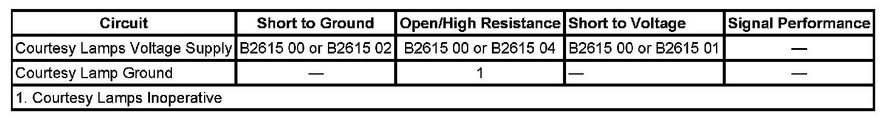

B2615
DTC B2615
DTC DESCRIPTOR
DTC B2615 00
Passenger Compartment Dimming 2 Circuit
DTC B2615 01
Passenger Compartment Dimming 2 Circuit Short to Battery
DTC B2615 02
Passenger Compartment Dimming 2 Circuit Short to Ground
DTC B2615 04
Passenger Compartment Dimming 2 Circuit Open
DIAGNOSTIC FAULT INFORMATION

Perform the Diagnostic System Check - Vehicle prior to using this diagnostic procedure. Initial Inspection and Diagnostic Overview
CIRCUIT/SYSTEM DESCRIPTION
Voltage for the courtesy lamps is supplied from body control module (BCM), driver door switch, and passenger door switch. When a door is opened, a signal is applied to the door module. The door module then applies a message on the low speed GMLAN serial data communication circuit to the BCM to activate the courtesy lamps. The BCM then applies voltage to the courtesy lamps voltage supply circuit and the components on that circuit.
CONDITIONS FOR RUNNING THE DTC
The ignition is ON, the BCM, driver door switch, and passenger door switch attempt to illuminate the courtesy lamps.
CONDITIONS FOR SETTING THE DTC
The BCM, driver door switch, or passenger door switch detects a short to ground, short to voltage, or open on the courtesy lamp voltage supply circuit.
ACTION TAKEN WHEN THE DTC SETS
The BCM, driver door switch, and passenger door switch cease attempts to illuminate the courtesy lamps.
CONDITIONS FOR CLEARING THE DTC
- The conditions for setting the DTC are no longer present.
- A history DTC clears after 100 malfunction-free ignition cycles.
- The BCM receives the clear code command from the scan tool.
CIRCUIT/SYSTEM VERIFICATION
Ignition ON, activate the Courtesy Lamps output control with the scan tool. The interior courtesy lamps should illuminate.
CIRCUIT/SYSTEM TESTING
1. Ignition OFF, disconnect all the courtesy lamps voltage supply circuit lamp components on the circuit.
2. Verify that DTC B2615 00, B2615 01, DTC B2615 02, and/or DTC B2615 04 does not reset.
- If the DTC resets, test for a short to voltage, short to ground, or an open in the courtesy lamps supply voltage circuit. If the circuit/connections test normal, replace the BCM, driver door switch, and passenger door switch as applicable.
3. Reconnect each component one at a time and test for DTC B2615 00, B2615 01, DTC B2615 02, and/or DTC B2615 04.
- If the DTC resets, replace that particular component.
- If the DTC does not reset, replace the BCM.
REPAIR INSTRUCTIONS
Perform the Diagnostic Repair Verification after completing the diagnostic procedure.
- Refer to the appropriate replacement procedure for the component causing the condition.
- Control Module References for BCM, driver door switch, and passenger door switch replacement, setup, and programming. Verification Tests Programming and Relearning